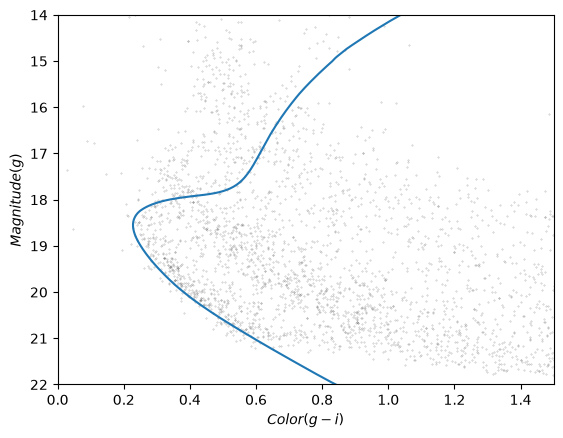
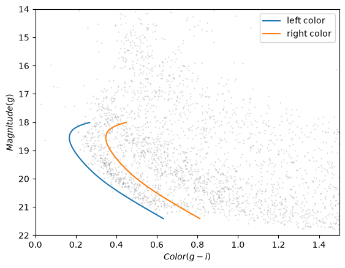
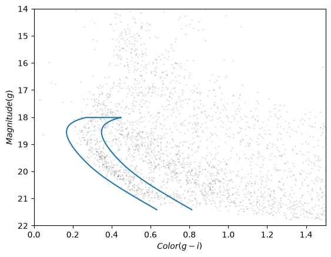
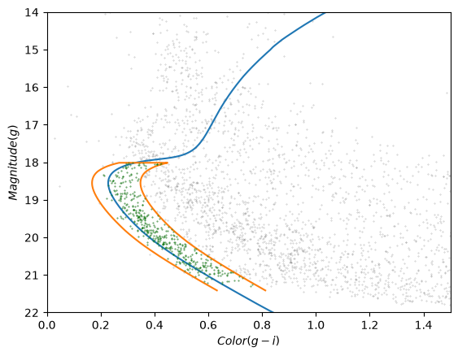
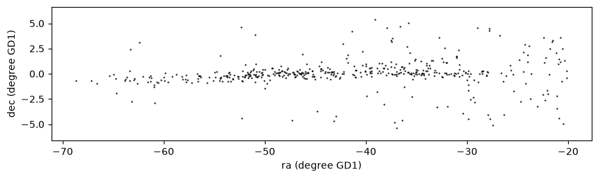

6. Photometry#
Click here to run this notebook on Colab.
This is the sixth in a series of notebooks related to astronomy data.
As a continuing example, we will replicate part of the analysis in a 2018 paper, “Off the beaten path: Gaia reveals GD-1 stars outside of the main stream” by Adrian M. Price-Whelan and Ana Bonaca.
In the previous lesson we downloaded photometry data from Pan-STARRS, which is available from the same server we’ve been using to get Gaia data.
The next step in the analysis is to select candidate stars based on the photometry data.
The following figure from the paper is a color-magnitude diagram showing the stars we previously selected based on proper motion:

In red is a theoretical isochrone, showing where we expect the stars in GD-1 to fall based on the metallicity and age of their original globular cluster.
By selecting stars in the shaded area, we can further distinguish the main sequence of GD-1 from mostly younger background stars.
Outline#
Here are the steps in this notebook:
We’ll reload the data from the previous notebook and make a color-magnitude diagram.
We’ll use an isochrone computed by MIST to specify a polygonal region in the color-magnitude diagram and select the stars inside it.
After completing this lesson, you should be able to
Use Matplotlib to specify a
Polygonand determine which points fall inside it.Use Pandas to merge data from multiple
DataFrames, much like a databaseJOINoperation.
Reload the data#
You can download the data from the previous lesson or run the following cell, which downloads it if necessary.
from os.path import basename, exists
def download(url):
filename = basename(url)
if not exists(filename):
from urllib.request import urlretrieve
local, _ = urlretrieve(url, filename)
print('Downloaded ' + local)
download('https://github.com/AllenDowney/AstronomicalData/raw/main/' +
'data/gd1_data.hdf')
Now we can reload candidate_df.
import numpy as np
import pandas as pd
np.set_printoptions(legacy='1.25')
filename = 'gd1_data.hdf'
candidate_df = pd.read_hdf(filename, 'candidate_df')
Plotting photometry data#
Now that we have photometry data from Pan-STARRS, we can replicate the color-magnitude diagram from the original paper:
The y-axis shows the apparent magnitude of each source with the g filter.
The x-axis shows the difference in apparent magnitude between the g and i filters, which indicates color.
Stars with lower values of (g-i) are brighter in g-band than in i-band, compared to other stars, which means they are bluer.
Stars in the lower-left quadrant of this diagram are less bright than the others, and have lower metallicity, which means they are likely to be older.
Since we expect the stars in GD-1 to be older than the background stars, the stars in the lower-left are more likely to be in GD-1.
The following function takes a table containing photometry data and draws a color-magnitude diagram.
The input can be an Astropy Table or Pandas DataFrame, as long as it has columns named g_mean_psf_mag and i_mean_psf_mag.
import matplotlib.pyplot as plt
def plot_cmd(table):
"""Plot a color magnitude diagram.
table: Table or DataFrame with photometry data
"""
y = table['g_mean_psf_mag']
x = table['g_mean_psf_mag'] - table['i_mean_psf_mag']
plt.plot(x, y, 'ko', markersize=0.3, alpha=0.3)
plt.xlim([0, 1.5])
plt.ylim([14, 22])
plt.gca().invert_yaxis()
plt.ylabel('$Magnitude (g)$')
plt.xlabel('$Color (g-i)$')
plot_cmd uses a new function, invert_yaxis, to invert the y axis, which is conventional when plotting magnitudes, since lower magnitude indicates higher brightness.
invert_yaxis is a little different from the other functions we’ve used. You can’t call it like this:
plt.invert_yaxis() # doesn't work
You have to call it like this:
plt.gca().invert_yaxis() # works
gca stands for “get current axis”. It returns an object that represents the axes of the current figure, and that object provides invert_yaxis.
In case anyone asks: The most likely reason for this inconsistency in the interface is that invert_yaxis is a lesser-used function, so it’s not made available at the top level of the interface.
Here’s what the results look like.
plot_cmd(candidate_df)

Our figure does not look exactly like the one in the paper because we are working with a smaller region of the sky, so we don’t have as many stars. But we can see an overdense region in the lower left that contains stars with the photometry we expect for GD-1.
In the next section we’ll use an isochrone to specify a polygon that contains this overdense regioin.
Isochrone#
Based on our best estimates for the ages of the stars in GD-1 and their metallicity, we can compute a stellar isochrone that predicts the relationship between their magnitude and color.
In fact, we can use MESA Isochrones & Stellar Tracks (MIST) to compute it for us.
Using the MIST Version 1.2 web interface, we computed an isochrone with the following parameters:
Rotation initial v/v_crit = 0.4
Single age, linear scale = 12e9
Composition [Fe/H] = -1.35
Synthetic Photometry, PanStarrs
Extinction av = 0
The following cell downloads the results:
download('https://github.com/AllenDowney/AstronomicalData/raw/main/' +
'data/MIST_iso_5fd2532653c27.iso.cmd')
Downloaded MIST_iso_5fd2532653c27.iso.cmd
To read this file we’ll download a Python module from this repository.
download('https://github.com/jieunchoi/MIST_codes/raw/master/scripts/' +
'read_mist_models.py')
Downloaded read_mist_models.py
Now we can read the file:
import read_mist_models
filename = 'MIST_iso_5fd2532653c27.iso.cmd'
iso = read_mist_models.ISOCMD(filename)
Reading in: MIST_iso_5fd2532653c27.iso.cmd
The result is an ISOCMD object.
type(iso)
read_mist_models.ISOCMD
It contains a list of arrays, one for each isochrone.
type(iso.isocmds)
list
We only got one isochrone.
len(iso.isocmds)
1
So we can select it like this:
iso_array = iso.isocmds[0]
It’s a NumPy array:
type(iso_array)
numpy.ndarray
But it’s an unusual NumPy array, because it contains names for the columns.
iso_array.dtype
dtype([('EEP', '<i4'), ('isochrone_age_yr', '<f8'), ('initial_mass', '<f8'), ('star_mass', '<f8'), ('log_Teff', '<f8'), ('log_g', '<f8'), ('log_L', '<f8'), ('[Fe/H]_init', '<f8'), ('[Fe/H]', '<f8'), ('PS_g', '<f8'), ('PS_r', '<f8'), ('PS_i', '<f8'), ('PS_z', '<f8'), ('PS_y', '<f8'), ('PS_w', '<f8'), ('PS_open', '<f8'), ('phase', '<f8')])
Which means we can select columns using the bracket operator:
iso_array['phase']
array([0., 0., 0., ..., 6., 6., 6.])
We can use phase to select the part of the isochrone for stars in the main sequence and red giant phases.
phase_mask = (iso_array['phase'] >= 0) & (iso_array['phase'] < 3)
phase_mask.sum()
354
main_sequence = iso_array[phase_mask]
len(main_sequence)
354
The other two columns we’ll use are PS_g and PS_i, which contain simulated photometry data for stars with the given age and metallicity, based on a model of the Pan-STARRS sensors.
We’ll use these columns to superimpose the isochrone on the color-magnitude diagram, but first we have to use a distance modulus to scale the isochrone based on the estimated distance of GD-1.
We can use the Distance object from Astropy to compute the distance modulus.
import astropy.coordinates as coord
import astropy.units as u
distance = 7.8 * u.kpc
distmod = coord.Distance(distance).distmod.value
distmod
14.4604730134524
Now we can compute the scaled magnitude and color of the isochrone.
mag_g = main_sequence['PS_g'] + distmod
color_g_i = main_sequence['PS_g'] - main_sequence['PS_i']
Now we can plot it on the color-magnitude diagram like this.
plot_cmd(candidate_df)
plt.plot(color_g_i, mag_g);

The theoretical isochrone passes through the overdense region where we expect to find stars in GD-1.
Let’s save this result so we can reload it later without repeating the steps in this section.
So we can save the data in an HDF5 file, we’ll put it in a Pandas DataFrame first:
import pandas as pd
iso_df = pd.DataFrame()
iso_df['mag_g'] = mag_g
iso_df['color_g_i'] = color_g_i
iso_df.head()
| mag_g | color_g_i | |
|---|---|---|
| 0 | 28.294743 | 2.195021 |
| 1 | 28.189718 | 2.166076 |
| 2 | 28.051761 | 2.129312 |
| 3 | 27.916194 | 2.093721 |
| 4 | 27.780024 | 2.058585 |
And then save it.
filename = 'gd1_isochrone.hdf5'
iso_df.to_hdf(filename, key='iso_df')
Making a polygon#
The following cell downloads the isochrone we made in the previous section, if necessary.
download('https://github.com/AllenDowney/AstronomicalData/raw/main/data/' +
'gd1_isochrone.hdf5')
Now we can read it back in.
filename = 'gd1_isochrone.hdf5'
iso_df = pd.read_hdf(filename, 'iso_df')
iso_df.head()
| mag_g | color_g_i | |
|---|---|---|
| 0 | 28.294743 | 2.195021 |
| 1 | 28.189718 | 2.166076 |
| 2 | 28.051761 | 2.129312 |
| 3 | 27.916194 | 2.093721 |
| 4 | 27.780024 | 2.058585 |
Here’s what the isochrone looks like on the color-magnitude diagram.
plot_cmd(candidate_df)
plt.plot(iso_df['color_g_i'], iso_df['mag_g']);
In the bottom half of the figure, the isochrone passes through the overdense region where the stars are likely to belong to GD-1.
In the top half, the isochrone passes through other regions where the stars have higher magnitude and metallicity than we expect for stars in GD-1.
So we’ll select the part of the isochrone that lies in the overdense region.
g_mask is a Boolean Series that is True where g is between 18.0 and 21.5.
g = iso_df['mag_g']
g_mask = (g > 18.0) & (g < 21.5)
g_mask.sum()
117
We can use it to select the corresponding rows in iso_df:
iso_masked = iso_df[g_mask]
iso_masked.head()
| mag_g | color_g_i | |
|---|---|---|
| 94 | 21.411746 | 0.692171 |
| 95 | 21.322466 | 0.670238 |
| 96 | 21.233380 | 0.648449 |
| 97 | 21.144427 | 0.626924 |
| 98 | 21.054549 | 0.605461 |
Now, to select the stars in the overdense region, we have to define a polygon that includes stars near the isochrone.
The original paper uses the following formulas to define the left and right boundaries.
g = iso_masked['mag_g']
left_color = iso_masked['color_g_i'] - 0.4 * (g/28)**5
right_color = iso_masked['color_g_i'] + 0.8 * (g/28)**5
The intention is to define a polygon that gets wider as g increases, to reflect increasing uncertainty.
But we can do about as well with a simpler formula:
g = iso_masked['mag_g']
left_color = iso_masked['color_g_i'] - 0.06
right_color = iso_masked['color_g_i'] + 0.12
Here’s what these boundaries look like:
plot_cmd(candidate_df)
plt.plot(left_color, g, label='left color')
plt.plot(right_color, g, label='right color')
plt.legend();

Which points are in the polygon?#
Matplotlib provides a Polygon object that we can use to check which points fall in the polygon we just constructed.
To make a Polygon, we need to assemble g, left_color, and right_color into a loop, so the points in left_color are connected to the points of right_color in reverse order.
We’ll use the following function, which takes two arrays and joins them front-to-back:
import numpy as np
def front_to_back(first, second):
"""Join two arrays front to back."""
return np.append(first, second[::-1])
front_to_back uses a “slice index” to reverse the elements of second.
As explained in the NumPy documentation, a slice index has three parts separated by colons:
start: The index of the element where the slice starts.stop: The index of the element where the slice ends.step: The step size between elements.
In this example, start and stop are omitted, which means all elements are selected.
And step is -1, which means the elements are in reverse order.
We can use front_to_back to make a loop that includes the elements of left_color and right_color:
color_loop = front_to_back(left_color, right_color)
color_loop.shape
(234,)
And a corresponding loop with the elements of g in forward and reverse order.
mag_loop = front_to_back(g, g)
mag_loop.shape
(234,)
Here’s what the loop looks like.
plot_cmd(candidate_df)
plt.plot(color_loop, mag_loop);

To make a Polygon, it will be convenient to put color_loop and mag_loop into a DataFrame:
loop_df = pd.DataFrame()
loop_df['color_loop'] = color_loop
loop_df['mag_loop'] = mag_loop
loop_df.head()
| color_loop | mag_loop | |
|---|---|---|
| 0 | 0.632171 | 21.411746 |
| 1 | 0.610238 | 21.322466 |
| 2 | 0.588449 | 21.233380 |
| 3 | 0.566924 | 21.144427 |
| 4 | 0.545461 | 21.054549 |
Now we can pass loop_df to Polygon:
from matplotlib.patches import Polygon
polygon = Polygon(loop_df)
polygon
<matplotlib.patches.Polygon at 0x7513ab812ba0>
The result is a Polygon object , which provides contains_points, which figures out which points are inside the polygon.
To test it, we’ll create a list with two points, one inside the polygon and one outside.
points = [(0.4, 20),
(0.4, 16)]
Now we can make sure contains_points does what we expect.
inside = polygon.contains_points(points)
inside
array([ True, False])
The result is an array of Boolean values.
We are almost ready to select stars whose photometry data falls in this polygon. But first we need to do some data cleaning.
Save the polygon#
Reproducibile research is “the idea that … the full computational environment used to produce the results in the paper such as the code, data, etc. can be used to reproduce the results and create new work based on the research.”
This Jupyter notebook is an example of reproducible research because it contains all of the code needed to reproduce the results, including the database queries that download the data and the analysis.
In this lesson we used an isochrone to derive a polygon, which we used to select stars based on photometry. So it is important to record the polygon as part of the data analysis pipeline.
Here’s how we can save it in an HDF file.
filename = 'gd1_data.hdf'
loop_df.to_hdf(filename, key='loop_df')
Selecting based on photometry#
Now let’s see how many of the candidate stars are inside the polygon we chose.
We’ll put color and magnitude data from candidate_df into a new DataFrame:
points = pd.DataFrame()
points['color'] = candidate_df['g_mean_psf_mag'] - candidate_df['i_mean_psf_mag']
points['mag'] = candidate_df['g_mean_psf_mag']
points.head()
| color | mag | |
|---|---|---|
| 0 | 0.483500 | 17.124599 |
| 1 | 0.443998 | 20.268999 |
| 2 | 0.443501 | 20.253401 |
| 3 | 0.435101 | 18.262600 |
| 4 | 1.216900 | 17.963400 |
Which we can pass to contains_points:
inside = polygon.contains_points(points)
inside
array([False, True, True, ..., False, False, False])
The result is a Boolean array. We can use sum to see how many stars fall in the polygon.
inside.sum()
454
Now we can use inside as a mask to select stars that fall inside the polygon.
winner_df = candidate_df[inside]
Let’s make a color-magnitude plot one more time, highlighting the selected stars with green markers.
plot_cmd(candidate_df)
plt.plot(color_g_i, mag_g)
plt.plot(color_loop, mag_loop)
x = winner_df['g_mean_psf_mag'] - winner_df['i_mean_psf_mag']
y = winner_df['g_mean_psf_mag']
plt.plot(x, y, 'go', markersize=0.5, alpha=0.5);

It looks like the selected stars are, in fact, inside the polygon, which means they have photometry data consistent with GD-1.
Finally, we can plot the coordinates of the selected stars:
plt.figure(figsize=(10,2.5))
x = winner_df['phi1']
y = winner_df['phi2']
plt.plot(x, y, 'ko', markersize=0.7, alpha=0.9)
plt.xlabel('ra (degree GD1)')
plt.ylabel('dec (degree GD1)')
plt.axis('equal');

This example includes two new Matplotlib commands:
figurecreates the figure. In previous examples, we didn’t have to use this function; the figure was created automatically. But when we call it explicitly, we can provide arguments likefigsize, which sets the size of the figure.axiswith the parameterequalsets up the axes so a unit is the same size along thexandyaxes.
In an example like this, where x and y represent coordinates in space, equal axes ensures that the distance between points is represented accurately.
Write the data#
Finally, let’s write the selected stars to a file.
filename = 'gd1_data.hdf'
winner_df.to_hdf(filename, key='winner_df')
from os.path import getsize
MB = 1024 * 1024
getsize(filename) / MB
4.048393249511719
Summary#
In this lesson, we used photometry data from Pan-STARRS to draw a color-magnitude diagram. We used an isochrone to define a polygon and select stars we think are likely to be in GD-1. Plotting the results, we have a clearer picture of GD-1, similar to Figure 1 in the original paper.
Best practices#
Matplotlib provides operations for working with points, polygons, and other geometric entities, so it’s not just for making figures.
Use Matplotlib options to control the size and aspect ratio of figures to make them easier to interpret. In this example, we scaled the axes so the size of a degree is equal along both axes.
Record every element of the data analysis pipeline that would be needed to replicate the results.
Copyright 2020–2026 Allen Downey
Code license: MIT License
Text license: Creative Commons Attribution 4.0 International